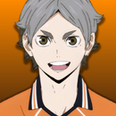
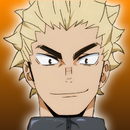

Selecione seu Jogador
- 
- 
Daichi Sawamura
Daichi Sawamurama aluno do 3° ano da escola Karasuno. Capitão e Atacante, desenvolveu sua habilidade de liderança e de técnico por conta da saída do técnico Ukai que foi hospitilizado.
Daichi Sawamurama aluno do 3° ano da escola Karasuno. Capitão e Atacante, desenvolveu sua habilidade de liderança e de técnico por conta da saída do técnico Ukai que foi hospitilizado.